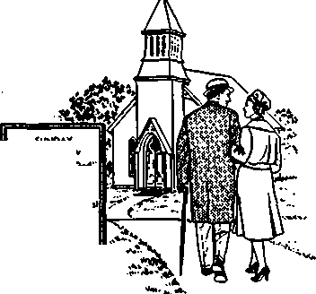

THE MISSION OF THIS JOURNAL
News sources that are able to keep you awake ta the vital issues ot our times must be unfettered by censorship and selfish interests. “Awake!" has no fetters. It recognizes facts, faces facts, is free to publish facts. It is not bound by political ambitions or obligations; it is unhampered by advertisers whose toes must not be trodden on; it is unprejudiced by traditional creeds. This journal keeps itself free that it may speak freely to you. But it does not abuse its freedom. It maintains integrity to truth.
“Awake!" uses the regular news channels, but is not dependent on them. Its own correspondents are on all continents, in scores of nations. From the four corners of the earth their uncensored, on-the-scenes reports come to you through these columns. This journal’s viewpoint is not narrow, but is international. It is read in many nations, in many languages, by persons of all ages. Through its pages many fields of knowledge pass in review—government, commerce, religion, history, geography, science, social conditions, natural wonders—why, its coverage is as broad as the earth and as high as the heavens.
"Awake!” pledges itself to righteous principles, to exposing hidden foes and subtle dangers, to championing freedom for all, to comforting mourners and strengthening those disheartened by the failures of a delinquent world, reflecting sure hope for the establishment of a righteous New World.
Get acquainted with “Awoke!" Keep awake by reading "Awake!"
<11 nt
Published Simultaneously in the United States by the WATCHTOWER BIBLE and tract SOCIETY OF NEW YORK, INC.
117 Adams Street Brooklyn 1, New York, U.S.A,
and in England by WATCH TOWER BIBLE AND TRACT SOCIETY
Watch Tower House, The Ridgeway London N*W, 7, England
N. II. Knorr, Presided Grant Suiter, flecretan/
Printing this issue: 3,250,000 4d 4 copy (Australia, Bd; South Africa, Si'gC)
“Awake!” h published in the following 23 fenpiafM: Semimonthly—Afrikaans, Clnjanja. Duntsh, Dutch, Eng-liati, Finnish, French, German, (keek. Italian, Japanese, Norwegian, Portuguese, Spanish. Swedish. Tagalog, Zulu-Monthly—Cebu-Vtfiayan, Iloeano, Korean, Malayalam, Polish, Ukrainian.
Yearly subscription rates
Oflt&j for wmlmcmthly editions
Am erica, U.S., II? Adame St, Brooklyn 1, N.Y. $1 Australia, 11 Beresford Rd., Btrathfleld, N.B.W. 87-Canada, 150 Brideeland Ave., Toronto 19, Ont. |1 England, Watch Tower House,
The Bidgeway, London X.ff. 7 7/-
New Zealand, (121 New North Rd., Auckland, S.W. 1 7/-South Africa, Private Bag, Elandpfontein, Tri. 70c Monthly editions coat half the above rata.
Rimlltlaits for subscriptions should be sent te the office Ln your country, Otherwise send your remittance to London. Notice of expiration Is sent at least two Issum before subscription expires.
CHANGES OF ADDRESS ahfiild reach nt thirty day* before yoir moving date. Give is yoir old and new Bddreta (Jf pOMiblo, year ofd address label). Watch TvWrt, Watch Tower House, The Ridgeway, Lwiden N.W. 7, England,
Sntmd as second-class matter at Brooklyn, N.Y. Printed in England
The Bible translation «ed In “Awake!" ie the
When other translations are
Afi - American Hlandard Version AT - An American Translation AV — Authorised Version (1611} DO, — J. N. Darby's version
md tho
JJy - •
i New World Translation । following symbols win Catholic Douay version Tha Emphatic Dlajjlott
JP - Jewish Publication tfoa. _L^ - Isaac Leeser’s version
of the appear ftfo-HO -Bfi -
’
Holy Scriptures, 1961 edition, behind the citations:
Janies xMoftatt’s version J. B. Bother ham's version Revised Standard Version Robert Young's version
CONTENTS
Divine Standard for Right Worship
Christianity as Taught by Jesus Christ 26
sw
al satisfaction, such religion may DI fl II 111
be what he wants. But God tells fi,| UII 1
man: “ ‘The thoughts of you peo- TIT An Oil ID pie are not my thoughts, nor are UKijIIll my ways your ways,’ is the utterance of Jehovah. ‘For as the heavens are higher than the earth, so my ways are
AN needs a divine standard for worship. Religion that is adhered to merely be- j cause it satisfies the inclina- j tions of the worshiper is not I in reality service to God. It is 1 true that for one who seeks in religion only personal emotionhigher than your ways, and my thoughts than your thoughts.’ ” (Isa. 55:8, 9) Thus the form of worship that is right in the eyes of God is determined, not merely by consulting one’s own feelings, but by going to the Bible, the Word of God. Worship that conforms to that divine standard results in lasting blessings from God.
It is not left up to men to judge the various religions according to their own standards. Jehovah God, in his Word the Bible, sets forth the divine standard; but those who accept it are under obligation as his witnesses to make it known to others. While they are not themselves the ones who do the judging, failure on their part to proclaim God’s judgments would show lack of faith in God, who says to them: “You are my witnesses.”—Isa. 43:10.
But do not all religions teach the truth, leading men to God in different ways? Jesus testified that he came into the world to bear witness to the truth and that everyone on the side of the truth listens to his voice. He did not say that whatever a person may happen to believe is the truth, that all religions have the truth. In prayer to his Father he identified the Source of all religious truth when he said: “Your word is truth.” (John 18:37; 17:17) When others, professing to serve God, advocated beliefs that were at variance with the Word of God, Jesus did not reason that they were all trying to serve God in their own way. To the contrary, he said: “You have made the word of God invalid because of your tradition,” and he applied to them what God said through the prophet Isaiah: “It is in vain that they keep worshiping me, because they teach commands of men as doctrines.” (Matt. 15:6-9) Theirs was not another way to the kingdom of God.
Therefore, if you are going to practice the religion God approves, you must be willing to compare your beliefs with the Word of God and then conform to that divine standard for right worship. Do not conclude that there is no need to make such a test of your faith. Follow the wise Scriptural counsel: “Keep testing whether you are in the faith, keep proving what you yourselves are.”—2 Cor. 13:5.
SUNDAY KOOK flCVlEW 'Sucevu With Ged''
■'*•1 ■
RIDAY ftaxaor
WEDNESDAY Young People Y $««
WHAT does church membership mean in your life? Is your church a place where you are instructed in the Word of God, where you are equipped to be a follower of Jesus, obeying his command: ‘Go and make disciples of people of all the nations, teaching them to observe all the things I have commanded you’? (Matt. 28: 19, 20) Are the members of your church vigorous Christians, spiritually awake to their responsibilities and active in fulfilling them? Or is your religion the not-too-controvcrsial type, the variety that is “socially acceptable”? Is your church a place where you hear book reviews and discourses on political issues, a place where you enjoy social activities such as church suppers and bazaars, perhaps even bowling and dancing?
Before you give your own answer, it should be of interest to you to know what those in the pulpits of the Protestant churches have to say about it. J. Arthur Lewis, speaking in an Australian Baptist Church, said: “We have watered down the Gospel of Christ until we have made it seem that the chief end of religion is to make men amiable, easygoing, pussyfooted and tolerant of everything. We have turned a revolutionary faith into a gentle ramble around the garden, weather permitting.” In a similar vein, the primate of the Anglican Church in Australia, Hugh Gough, declared: “I do not think it would be exaggerating to say the majority of people in this Christian country have no idea of what true Christianity really is. Where does the blame for such ignorance lie?
I think it must lie with the clergy. Instead of teaching the faith, they offer teasy titbits of current affairs.”
In Germany, Der Weg, an Evangelical
paper, set out a similar plight: “We Christians are people who want to live in quietness and comfort, enshrouded in the fog and mist of beautiful religious words . , . But there is nothing behind it all. No obedience, no service and no following after.”
In view of this spiritually impoverished condition, some clergymen say that, from a religious standpoint, they cannot see why people want to be church members. As reported in the Winnipeg, Canada,
Tribune, D. R. Keating, minister of the United Church, said this: “In the present condition of the churches I can’t figure out why a person, especially a man, wants to become a member of the church. He must either have relegated religion to one of the dispensable trivialities of his life— socially useful and personally harmless; or he has illusions about what he’s getting into—maybe he’s been reading the New Testament and assumes that’s what he’ll find in the churches. ... I, for one, admit that I can’t think of a church that I would bother crossing the street to enter if I were a layman . . . The only reason I go to church is because I am a minister and I wager that, if the truth were known, the same goes for all the clergy.”
That is what a good number of those in the Protestant pulpits think about the meaning of church membership. What about those who occupy the pews ?
Recently an extensive survey was made of Protestant families in America. The majority of those covered by this survey were consistent in their church attendance and active in the churches’ programs. Said the Religious Herald in commenting on the survey: “Ordinarily in such a group, we would expect to find basic Christian convictions and personal commitment to the essential doctrines of the Christian faith. But those who conducted this survey found very few with a mature and articulate faith. The majority were ‘vague and confused about the church and its beliefs.’ . , . Some identified Christian faith with moralism, while others thought it was about the same as communion with nature. Some equated Christianity with ‘the American way of life.’ Others thought tljat it is important to ‘have faith’ but that it does not matter much in what or in whom. . . . Some said they joined the church because they ‘wanted a sense of belonging’ or wanted to get their children into wholesome activities. Others believed the church to be a good thing for every community to have, like ‘substantial banks, swim clubs, or a city dump.’" Yes, for the majority the church was an institution of character building and a center for social activities, not primarily a center for worshiping God; yet membership was sufficient to give them a sincere feeling of religiousness.
Among some there was still found to be devotion to the underlying ideals of Protestantism, but this was rare. As reported in the book Families in the Church: A Protestant Survey (1961), not only were most church members vague and confused, about their faith, but they had abandoned the fundamental Protestant concept that the Reformation had eliminated the distinction between the priesthood and the laity because all were to participate in the Christian ministry. Yes, it was found that both pastors and church members had generally drifted back to the Roman Catholic unscriptural practice of clericalism, with a sharp division between clergy and laity. So it becomes evident that, not only are those members who fail to attend church members in name only, but even those who do attend are largely Protestant in name only.
If that type of church membership does not appeal to you, then it is up to you to prove it. If you are not being taught the Word of God thoroughly enough so that you can obey Jesus’ command to teach others, then it is up to you to start associating with those who do make a thorough study of the Bible for that purpose. On the other hand, if you belong to a denomination where you are being instructed in the teachings of your church, you ought to be like the noble-minded Bereans, of whom the Bible says: “They received the word with the greatest eagerness of mind, carefully examining the Scriptures daily as to whether these things were so.” (Acts 17:11) Do not be indifferent about it; be eager of mind. Prove it by checking the teachings of your church against the Bible. If you find that you are being taught the traditions of men instead of the truths of God, have the courage to stand up for what you know is right and to associate with those who advocate it.—Col. 2:8.
HOW important is the Bible to you? Is it the standard by which you measure ideas as to their truthfulness? Is it the authority that you would accept above all others? Few today so highly esteem the Bible. By comparison with Jesus and the early apostles the majority of Protestant theologians and clergymen would be considered rejectors of the Bible. “It is the Christian church that has forgotten God and . , . spawned a host of Bible rejectors,” claimed the Baptist Watchman-Examiner.
Theology Today, a highly regarded Protestant journal, in its January, 1957, issue, observed that ministers today fail to use the Bible and build up faith in it: “For a great many ministers, the Bible is not used as the main means of grace. In short, few congregations take the Bible seriously enough to help laymen to read it daily and meaningfully. Much of this failure to use the Bible in Church life and work may be due to the minister’s fear of being a Bible-toting proof-text-quoting evangelist.” Is this the situation in your church?
Why is there such a neglect of Bible teaching today? Do not ministers believe the Bible any longer? According to clergyman Gordon Andersen; “When we believe in the whole Bible as God’s Word we have to do it without the support from the ‘leading’ theologians in Norway and from intelligent theological professors in Denmark.” Giving further insight into how theologians and clergymen view the Bible, the foremost Protestant magazine in the United States, The Christian Century, of May 31, 1961, said: “Biblical concepts and statements cannot be taken literally as if they were pure history and science. They are symbols, and their meaning lies deeper. In these
repudiations of biblical literalism and claims to metaphysical [abstract, abstruse] knowledge nearly all schools of contemporary thought, religious and secular, concur,”
Not all of the Bible is historically true; much is abstract, needing to be interpreted by clergymen, who happen to have scores of various opinions—so the prevailing teaching of modern theology says. But where does this leave the average Protestant church member? He is confused. His faith in the Bible and in God are undermined, and in bewilderment he may give up his search for truth, feeling that the Bible is an old fiddle upon which you can play any old tune, The Christian Century, in continuing, admitted this, saying: “The plain man is bewildered and does not know what to believe.” Are there such bewildered persons, not knowing what to believe, in your church?
The Evangelical Monthly, a German church publication, in March of this year spoke of the “great gulf between most of today’s theology and the faith we find based upon the Bible,” But it lamented: “The terrible thing is that many theologians do not seem to realize that this gulf exists.” It is no wonder, then, that the average church member thinks that the beliefs and teachings of his minister are based upon the Bible and that they are the same as the teachings and beliefs of Jesus and his apostles. However, consider the evidence to the contrary.
In 1929 Dr. George H. Betts published the results of a survey ascertaining the personal beliefs of ministers and theological students. The ministers questioned included 50 Baptists, 50 Congregationalists, 30 Episcopalians, 49 Evangelicals, 104 Lutherans, 111 Methodists, 63 Presbyterians and 43 from 13 other denominations. To the question, “Do you believe that the Bible is wholly free from legend or myth?” 55 percent of 500 ministers and 95 percent of 200 theological students answered “No.” The vast majority freely admitted that they did not believe all the Bible was true! When one considers that those theological students of some thirty years ago are today’s ministers, one can appreciate that among the clergy faith in the Bible is indeed at low ebb. No wonder they rarely quote it as an authority!
It is therefore understandable that Protestant Episcopal bishop James A. Pike would speak of “the myth of the Garden of Eden,” and contend: “I do not know a single member of the Anglican Communion—bishop, presbyter, deacon or layman • -who believes this story literally.” How different from Jesus and the apostles, who quoted the record of happenings in the garden of Eden as fact—authoritative! —Matt. 19:4-6; 1 Tim. 2:13, 14.
Many churchgoers may feel that these opinions are held only by a few more radical ministers, and certainly not by their own. But if some of the world’s most outstanding theologians hold these views and they are regularly expressed in theological publications that your minister reads, is it not likely that they influence his thinking?
In the booklet Why Has Our Church Become Unreliable? (published in Germany) the writings of one of these eminent theologians, Rudolph Bultmann, were cited, with the comment: “Well known theology professors and their followers proclaim it to all willing to listen: 'Christ was not the Son of God, ... he was not conceived by the Holy Spirit, but Joseph was his father. The baptism story is a legend, the words spoken at the Last Supper were not spoken by Jesus, but are taken from a Hellenistic celebration. The disciples made up the story of the resurrection,’ ” and so forth. Perhaps to ears unfamiliar to hearing what is taught in today’s theological seminaries this may sound unbelievable. Yet this is the doctrine that prospective ministers of today study!
Giving evidence of this fact, the same booklet reports that Protestant church president Pastor Niembller of Germany said “that he would not pass anyone taking the examination who said he had not dealt with the Bultmann doctrine.” What effect has this had on today’s future ministers? “A show of hands for Professor Bultmann and his theology was recently made at the Hessen and Nassau State Synod. The results were appalling: Of 180 present, 172 were for Bultmann and thereby against the truth of God’s Word, and only 8 votes (one theologian and 7 lay members) were against Bultmann and thereby for the authenticity of the Bible.” Many Protestant church members would be utterly amazed to know how little their clergy rely on the Bible as the basis for their teaching and as the standard for measuring what is right and what is wrong.
You can check this for yourself. Call upon your minister; tell him that you have heard much comment about certain sections of the Bible being myth and legend. Tell him that this shocks you and that you want to make sure that he does not believe such things. On another occasion have someone else in the congregation call upon him, someone who views matters differently and who might tell the minister that he is glad it is finally being made public knowledge that much of the Bible is actually legend and myth. Try the same approach with the hell-fire doctrine, one person strongly contending for the teaching of fiery toi’ment and on another occasion someone wanting to make sure that he does not believe “that out-of-date doctrine.” See if the minister will not try to please both of you, expressing the idea that we cannot be sure about such things but that basically he agrees with your viewpoint.—2 Tim. 4:3, 4.
According to modem clergymen, what you believe is not so important; the important thing is simply to believe. But what about the Bible? What if the Bible says certain creeds and doctrines are false, what then? 'O that makes no difference,’ they say; ‘biblical concepts and statements cannot be taken literally. They are symbols, and their meaning lies deeper, so what may be true to one person is false to another. It’s all in the way you look at it.’ Such clergy double-talk that is so prevalent today amounts to outright rejection of God’s Word the Bible! How different their smooth-tongued ambiguity from the apostle’s unequivocal statement: “All Scripture is inspired of God,” and Jesus’ plain testimony: "Your word is truth.” —2 Tim. 3:16; John 17:17.
When learned Protestant theologians from every quarter challenge Jesus and the apostles as to the reliability of the Scriptures, it is only natural for one to wonder who is right. Is there evidence for believing the Bible to be inspired by God and absolutely true? Yes, the evidence is overwhelming to anyone who will examine it with an unprejudiced mind.
Consider Bible prophecy. It will readily be admitted that it is beyond man to consistently foretell the future with accuracy. Yet hundreds of years before the appearance of Jesus Christ the Scriptures recorded many details concerning him. He was to be born of the tribe of Judah in Bethlehem. (Gen. 49:10; Mic. 5:2) His mother was to be a virgin. (Isa. 7:14; Matt. 1:22, 23) He was to enter Jerusalem seated on an ass, in the manner of kings. (Zech. 9: 9; Matt. 21:4, 5) Yet he was to be despised and counted among transgressors. (Isa. 53: 3, 12; Luke 22:63; 23:32, 35) Every one of these prophecies and, some have calculated, at least three hundred more were fulfilled in Jesus. How remarkably accurate is the Bible! "
Why, then, do the clergy reject the Bible, even when confronted with the miraculous fulfillment of its prophecies? When new archaeological discoveries support the Bible’s authenticity so that leading archaeologists marvel in awe at its accuracy even in the smallest details, why do the clergy still reject the Bible, failing to use it as their main instrument of teaching? It is not because they can prove the Bible wrong, but it is because the Bible proves them to be wrong. The Bible does not support their beliefs, teachings or way of life and, being too proud to conform to the Bible, they reject it as the Word of God.
GOD is the one who “gives to all persons life and breath and all things.” Man’s very existence is dependent upon him, as the inspired psalmist declared: “For with you is the source of life." Therefore, how vitally important it is to gain an accurate knowledge of God so as to have a proper concept of him!—Acts 17:25; Ps. 36:9.
However, many persons may feel; 'Well, I know God, for, after all, there is only one God and that is the one we worship in church.’ But examine this assumption. The ing? A great deal of confusion has resulted within Christendom because of failure to accept as true what the Bible says regarding God. This has left the average churchgoer bewildered, for, as the Protestant journal The Christian Century admitted: “The theologian has said nothing about God that he can claim, in plain, ordinary language, is true, and that presents him as a Being worthy of worship.”
Perhaps Christendom’s most confusing concept of God is found in the trinity doctrine. “Of all of the beliefs of Christian faith, the most mysterious and the most mystifying to the ordinary Christian is
Scriptures tell us that “there are many ‘gods’ and many ‘lords,’ ” and that people often worship these false gods unknowingly. As an example, consider the circumstances in Jesus’ day. At that time the Jews also claimed to worship only one God, the true God Jehovah. And yet Jesus showed that because of their religious traditions and false teachings, they were, in fact, not worshiping Jehovah. They had developed a wrong concept of God, and so in actuality, Jesus said, they were worshiping or serving the false god Satan the Devil.—1 Cor. 8:5; John 8:44.
Since religious traditions and false teachings can cheat one in his desire to know and worship the true God, is it not of vital importance to our eternal welfare to examine our own concept of Him? Is our concept of God based on what the Bible says, or is it based merely on what men say, on some religious creed or teach-the trinity,” admitted Henry P. Van Dusen, president of Union Theological Seminary. And yet, according to the Illustrated Religious Encyclopedia: “The trinity is a fundamental rule of the Christian conception of God, yes, it constitutes the central doctrine of Christianity.” Indicating the trinity’s acceptance by Protestantism, in 1952 222 religious organizations in the United States replied to a questionnaire regarding their belief in the trinity, and 208 said that the trinity teaching represented their concept of God.
Just what is this trinity teaching? It is a concept of God as being three persons in one divine essence. This belief is expressed in essentially the same terms by many Protestant creeds and religious encyclopedias. As stated in the popular Westminster Confession of Faith: “In the unity of the Godhead there be three persons, of one substance, power and eternity: God the Father, God the Son, and God the Holy Ghost.” The Augsburg Confession of 1530, which, according to Philip Schaff, formu-larized the teaching of Protestantism, described the trinity in these words: ‘‘There is one divine essence which is called and is God, eternal . . - yet there are three persons of the same essence and power, who also are co-eternal, the Father, the Son, and the Holy Ghost.”
Does this trinity doctrine represent your personal concept of God or the teaching of your church concerning God? If so, can you explain just how it is that three persons can at the same time be one? Have you really thought this matter out? How do you conceive God when you pray to and think about him? Remember that as a Christian you are under obligation to be “always ready to make a defense before everyone that demands of you a reason for the hope in you."—1 Pet. 3:15.
By using the Bible have you ever tried to prove to another person the trinity concept of God? Did anyone show you from the Bible that God is three persons in one essence? Or do you accept the trinity just because it is taught by creeds of the church and your minister says it is so? “Look out,” the apostle warned, that someone does not “carry you off as his prey through the philosophy and empty deception according to the tradition of men,” instead of using the Scriptures to guide you in the worship of the true God.—Col. 2:8.
Clergymen and theologians themselves readily admit that the trinity is ‘unexplainable,’ that it is a ‘mystery.’ Many will use a triangle or a trefoil, instead of the Bible, to try to show how something can be three, and still, at the same time, be one. Indicating the difficulty in harmonizing the trinity teaching with the Bible, a recent issue of the Lutheran Herald asked: “Have you ever tried to prove to such people that the Trinity is taught in the Bible? If you have tried, you found it rather difficult, didn’t jfou? In fact you felt you couldn’t prove it to his satisfaction. Don’t despair! The simple truth is that neither you, nor I nor the most learned Bible scholars can prove it.’’
Just why cannot a person prove the so-called “central doctrine of Christianity" by the Bible? Is not the trinity based on the Bible? You may be shocked to know that there is not one Scripture text that mentions the word trinity, much less describes or explains it. Protestant theologian Dr. N. Leroy Norquist told how the trinity doctrine was formulated: “The men who framed it designed it as a tool to be used against heretics. In fighting heresy, they experimented with words, sharpened phrases, until they had defined the relation of the three ‘persons’ of the Trinity in such a way that they could finally say, ‘Unless you believe this you’re not a true believer.’ ” Yes, the trinity is a teaching framed and designed by men, but not supported by God’s Word. It is a false religious creed that confuses and deceives people, for while believing they are worshiping the true God, they are in fact serving the false god Satan the Devil.
A fundamental teaching of the majority of Protestant religions is that the true God is a God of love, and yet at the same time they say he is a God that keeps alive and eternally torments the souls of the wicked in a subterranean place called hell. Of 206 religious organizations in the United States questioned on this teaching, 171 said that they believed in eternal torment for the incorrigibly wicked.
Does this teaching represent your concept of God? Can you explain how love is shown by exposing persons to the excruciating pains of fiery torment? On January 24 of this year a young woman was sentenced to a prison term for tormenting her stepchildren with fire. If you were the judge, would you have commended the woman for choosing such a loving type of punishment? Of course not! Well, then, how can one argue that it is an expression of love for God to torment humans eternally?
It is impossible for persons to have a proper concept of God if they believe he eternally torments the wicked. “God Is love." (1 John 4:16) He will express his love for righteousness by annihilating the incorrigibly wicked, not by tormenting them forever. (Ps. 145:20) To be tormented eternally one would have to live forever, but God’s Word assures that “the wages sin pays is death.” (Rom. 6:23) Incorrigible sinners will be punished with death and will not receive God's gift of life. Since they will not live forever, it is impossible for them to be tormented forever. Those who conceive God as a tormentor may believe in sincerity that they are worshiping the true God, but they are actually being deceived into engaging in false worship.
The teachings of Christendom regarding God are indeed confusing and contradictory. Earlier this year Episcopal chaplain Michael P. Hamilton was moved to lament: “Protestantism in this country [United States] manifests the greatest confusion since Babel.” This condition has caused many persons to give up in their search for truth, for they reason: 'What is the use? Everyone has a different opinion anyway.’
Indicating that many of the clergy no longer believe the confusing and contradictory teachings of their own churches, Dr. George H. Betts’ survey of the personal beliefs of ministers and theological students revealed that 13 percent of 500 ministers and 35 percent of 200 theological students did not believe “that God is three distinct persons in one.” And only 53 percent of the ministers and 11 percent of the theological students said they believed “that hell exists as an actual place or location.” Episcopal bishop James A. Pike admitted concerning the trinity doctrine: “I see nothing in the Bible, as critically viewed, which supports this particularly weak and unintelligible philosophical organization of the nature of God.”
The religious creeds and teachings of men have not given a proper concept of God. They have turned millions, including many ministers, away from God in confusion and disgust. To what have they turned? Back to the Bible? No, for they have rejected the Bible as a divine guide. They have turned to agnosticism, the very brink of atheism. “For example,” said Time magazine, “Paul Tillich, America’s most eminent theologian, talks of God as ‘Being Itself’ or ‘Ultimate Reality.’ ” Episcopal bishop Pike acknowledged: “I have preached more and more in the past decade on the values of atheism and agnosticism. . . . There has to be a large measure of agnosticism in true religion.” These are not just isolated opinions but represent an ever-growing movement away from God.
Christendom by her ridiculous, Goddishonoring false creeds and teachings has misrepresented God, driving millions of persons away from him. So turn from Christendom. Turn to the Bible to gain a proper concept of God.
There is one God, and one mediator between God and men, a man Christ Jesus, who gave himself a corresponding ransom for all, —1 Tim. 2:5.
compromise between those who wanted to leave the Devil out of the proposed new Catechism and those who wanted to keep him in. The Archbishop’s commission originally recommended that the old phrase, “I should renounce the Devil and all his works, the pomps and vanity of this wicked world and all the sinful lusts of the flesh,” should be changed to "I would renounce all that is wrong and fight against evil.” The Bishop of Birmingham, Dr. J. L. Wilson, hoped that they would dispose once and for all of the idea of a personal Devil interfering in people’s lives. The Archdeacon of Aston, Dr. M. T. Dunlop, flatly denied the Devil’s existence. However, when many letters protested the change, the commission felt obliged to leave the Devil in, whether they believed in him or not.
Elsewhere in Protestantism the no-Devil trend proceeds. German theologian Reinhold Niebuhr does not accept the idea of a personal Devil. And The Encyclopedia Americana declares: "The modem tendency is to regard the personal Devil as a part of the mythology of early times when men . conceived the world forces as endowed with personal form. This is due to the advance of medical and natural science, better methods of historical criticism and modem philosophy.” (Vol. 9, page 38,1956
shrouds the Devil and his works. Does he exist or not? In the early 1950’s 250 American sects (including Catholics and Jews) were asked if their church teaches the existence of a personal Devil. Of 181 replies received, 159 said Yes; 22 said No. However, on an earlier questionnaire sent to 1,500 clergymen and theological students to ascertain what they really believe, “all formal creeds aside,” the results were different. Of the ministers who replied, 33 percent did not believe in a personal Devil and 7 percent were not sure. Denying Satan’s existence were 19 percent of the Evangelical clergymen, 32 percent of the Baptists, 33 percent of the Episcopalians, 34 percent of the Presbyterians, 54 percent of the Methodists and 73 percent of the Congregationalists. An additional
10 to 11 percent of the Congregationalists,
Ed.) The Encyclopaedia Britannica alleges
Evangelicals, Presbyterians and Methodists were not sure of the Devil’s existence, while 21 percent of the Episcopalians were not sure.
Early this year the Convocation of Canterbury (a gathering of bishops under the archbishop of Canterbury) suggested a that “it may be confidently affirmed that belief in Satan is not now generally regarded as an essential article of the Christian faith, nor is it found to be an indispensable element of Christian experience.” However, it adds: “The possibility of the existence of evil spirits, organized under one leader Satan to tempt man and oppose God, cannot be denied.”—Vol. 7, page 284, 1946 Ed.
The advent of diabolical nuclear weapons that could annihilate the human race has caused some to reconsider their dismissal of the Devil. Said Danish clergyman L. Brondum last November: “For many modern people the Devil is nothing but a figment of mind which cannot be acknowledged in our enlightened age. . . . Now it is also a little hard for Christian humanists to ascribe to man himself all the demonism that has been carried on by men. . . . The fable monster with tail and horse’s feet belongs to the imaginary world of the fairy tales; but the belief that wickedness is a wicked personal power behind human life is inextricably bound up with the speech of the Bible.”
Confused and perplexed, Protestantism is unable to come to any agreement on whether the Devil is a person or not. Vast numbers of Protestants cannot make the declaration of the early Christians: “We know we originate with God, but the whole world is lying in the power of the wicked one.” (1 John 5:19) Few see the need to follow the inspired advice of the apostle Paul: “Put on the complete suit of armor from God that you may be able to stand firm against the machinations of the Devil; because we have a fight.. . against the wicked spirit forces in the heavenly places.” —-Eph. 6:11,12.
What has resulted from this doubt and denial of the Devil’s existence? A complete rejection of the Christian principle that God’s kingdom is “no part of this world.” Jesus clearly stated the principle to his followers: “If you were part of the world, the world would be fond of what is its own. Now because you are no part of the world, but I have chosen you out of the world, on this account the world hates you.” Is Protestantism hated by this world? Are Protestants “no part of the world,” just as Jesus was “no part of the world”?—John 18:36; 15:19; 17:16.
In place of the gospel of early Christianity that announced the certain doom of this system of things, Protestantism takes up the “social gospel” and the “psychiatric gospel.” When worldly political figures start their career, Protestantism is there to “christen” them. When they conduct a successful campaign for political office, Protestantism is there to help inaugurate them. When they die, Protestantism is there to bury them as “Christian soldiers.” Said the former dean of St. Paul’s, W. R. Inge: “A church which has gone into politics, on either side, is thenceforth good for nothing but to be cast out and trodden under foot of men . . . examples show how ready the Devil is to capture the organizations formed to defeat him. When he has succeeded, he never changes the labels.”
The early Christian church never did business with Caesar’s state, refusing to take part in Roman politics in any form. Contrast that with Protestantism’s fatal course decried by Ronald Goetz in The Christian Century, November 2, 1960: “Protestantism’s position on the relation of church and state is at odds with the New Testament understanding of that relation. . . . The entire New Testament, without exception, sees this world as a broken, fallen order which cannot be lifted up entire but must be destroyed and then recreated—and this by the power of God in the Last Days. It is not the task of a New Testament-conceived church to foster relative improvements in the structures of earthly authority, but to coexist in any given order, its members testifying that God intends to and is able to alleviate human misery and the merciless injustice of this world ... A theology based on the promise of the Kingdom of God denies the possibility of the righteous significance of the orders of this world, not because they constitute order—New Testament theology is in no sense anarchical—but because order has been corrupted by the destructive, satanic forces abroad in the world.’’
Protestantism admits that it has failed to give a Christian witness. Instead of telling the world that the Son of God comes “to break up the works of the Devil,” Protestantism infers that God has sent her to reform those works. (1 John 3:8) Accordingly, she has many fingers in them. Modern Protestantism tries to steer the ship of state, generating steam for the United Nations and sovereign nations around the world. As she once hailed the League of Nations as the political expression of God’s kingdom on earth, so Protestantism today hails the United Nations. By influencing politicians she thinks to bring about the kingdom of God. Her excuse for entering the political arena is that she intends to clean it up. Instead, her own garments are soiled.
Rather than being loved of God and hated by the world, Protestantism has come to love the world and live under one roof with those hated by God. Warned the disciple James: “Adulteresses, do you not know that the friendship with the world is enmity with God? Whoever, therefore, wants to be a friend of the world is constituting himself an enemy of God.” (Jas. 4:4)' Protestantism has forgotten that the worship “that is clean and undefiled from the standpoint of our God and Father is . . . to keep oneself without spot from the world.” (Jas. 1:27) Devoted to finance and prestige, Protestantism has be- -come wealthy, respectable—and sterile.
The churches are neither the salt of the , earth nor the light of the world. They have become, instead, reflectors of worldly lights, offering mundane sermons that popularize science, ethics, philosophy and politics, Protestantism has entered into a worldly marriage of convenience designed to preserve and perpetuate her own existence at the price of Christian neutrality. In short, Protestantism is in the world and of it. Her illicit union and failure to reflect pure Bible truth were admitted by one Protestant clergyman in this protest published in the Oberldnder Sonntagsblatt, January 9, 1955:
“God has entrusted the church with the gospel for the whole world. But what has the church not done with God’s gospel? Suppression after suppression, fraud after fraud has been committed. Oftentimes stones instead of bread have been held out . . . What miserable and pitiable bunglers and forgers we pastors often are when compared with the apostle Paul, who really was imbued by Christ and was a child of God! We can well understand those who have assumed a critical attitude toward the church, because its servants proved to be servants of men, of mammon and of the Devil, of political parties and groups rather than servants of the gospel.”
What does the evidence show? Is Protestantism a chaste bride of Christ or a spiritual adulteress with the world? Has she made herself God’s friend or his enemy? By denying and doubting the Devil’s role as ruler of this world and its works has Protestantism led you to God or has it led you into the Devil’s camp, where you remain at the peril of your life?
The facts speak for themselves.
FACED as he is with the prospects of nuclear destruction in a third world war, man is desperately in need of a sound hope. Which way can he turn for security? Do the Protestant churches have the answer? What do they tell those who come to them in search of a sound basis for hope?
When the problem with which they are confronted is one that must be faced in this life, men are more inclined to look to men for an answer than to God. They do not feel that trust in God is a really practical solution for such threats as aggression by a foreign power. Thus, as is well known to church members everywhere, during time of war or when war is threatening, sermons from the pulpits are strongly nationalistic. They urge the people to stand back of their government, to fight for it and even to die for it. It is not merely a matter of ‘paying back Caesar’s things to Caesar, and God’s things to God,’ because in times of emergency everything is pledged to the State on the assumption that this is the will of God. —Mark 12:17.
As pointedly stated in the book Preachers Present Arms: “A consideration of the part taken by the clergymen and the churches in our leading wars shows that the government has been able to depend consistently upon organized religion for support. . . . The churches were consistent in the record of supporting all popular wars and proved, what had long been suspected, that Christianity has been becoming increasingly nationalistic.”
So it was that in 1933 the Protestant religions of Germany unitedly pledged unqualified support to the National Socialistic Germany of Adolf Hitler. That year vice-president Hahn of the Hannover State Church Conference declared: “Hitler, we of the Church with the strength imbued by faith support you and your office.” And as late as 1941, long after World War H was under way, the Protestant Evangelical Church in Mainz, Germany, thanked God for having given the people an Adolf Hitler. The Evangelical Church paper pledged faithfulness to the Fuhrer, saying that what they were doing was “a service to God.”
In the churches of the Allied nations the picture was not much different. Prayers were offered to God, thanking him for the political and military leaders who were guiding the affairs of the Allied nations. Men were encouraged to fight the enemy —even if they were fellow Baptists, Lutherans, Presbyterians, or of some other faith. On both sides God was petitioned for victory, and on both sides service to the State was viewed as synonymous with service to God. The hope to which the churches pointed their people was controlled by their nationality and political allegiance.
Now as the danger of war again becomes great the churches are once more called on to speak out- And what do they recommend? Presbyterian minister Gordon Maclean urged the building of more atomic and hydrogen bombs. "We can only be secure i£ we have superior weapons,” he said. “The hydrogen and the atomic bomb are unfortunately the superior weapons today.” Of course, not everyone agrees with him; the prospects are too terrible. But are even those who oppose the use of nuclear weapons any less nationalistic in the hope they advocate? Usually not
Since the clergy of Christendom claim to speak to the people in the name of God, we ask, Does the Word of God urge us to put confidence in the political nations and their military might? The answer is No! In fact, it was only when the people of ancient Israel turned apostate that they began to put their confidence in the military power of the nations around them. They turned to Egypt, with its horses and war chariots, for security, but in so doing they showed their lack of faith in God. Isaiah, a faithful prophet of God, reproved them, saying: “Woe to those going down to Egypt for assistance, those who rely on mere horses, and who put their trust in war chariots, because they are numerous . . . The Egyptians, though, are earthling men, and not God; and their horses are flesh, and not spirit.” (Isa. 31:1, 3) It is clear that religious leaders who teach their people to trust in the nations and their arsenals have not been sent by God.
Of course, when international peace organizations came into the limelight, the churches felt that it was their duty to take an active part in international affairs. Dr. Doniver Lund, an active Lutheran and a professor of history, writes of their successes. The churches, he says, “went from one cure-ali to another: the League of Nations; disarmament; the Pact of Paris; control of the munitions makers; and legislated neutrality. The churches for the most part followed along with this effort to reduce the complexities of world politics to something simple and manageable, only to meet with the frustration that all encountered.” Protestant efforts at peacemaking proved futile. The League, which they supported, failed. Nations went to war.
Apparently the Protestant churches learned nothing from their sad experience with the League, because they were soon back at it, supporting the League’s successor, the United Nations. In 1948 the Amsterdam Assembly of the World Council of Churches declared that the United Nations “deserves the support of Christians.” In 1953 the Fourth National Study Conference of the Churches at Cleveland, Ohio, made a similar plea. Various clergymen rallied to the side of the United Nations, stating that it alone had the ‘key to peace.’ One Australian minister went so far as to say that world peace rested, not with world government or with the Christian churches, but with the United Nations. Last year the Baptist World Alliance, meeting in Brazil, issued a statement that called on all Baptists to “recognize the importance of the United Nations Organization, and endeavor to support its efforts in examining and solving the complex problems of the world.” Other Protestant authorities have referred to the United Nations as “mankind’s best hope for peace."
Thus it becomes evident that the Protestant clergy have nothing to offer that the political leaders have not already advocated. Let the rulers call for war, and the clergy preach war. Let them advocate an international organization for the attainment of peace, and the clergy -jump on the band wagon. They have become parrots of political propaganda. The hope they have set before mankind is not from God. God does not tell mankind to rest its hope in the political organizations of men.
He says: “Do not put your trust in nobles, nor in the son of earthling man, to whom no salvation belongs. His spirit goes out, he goes back to his ground; in that day his thoughts do perish. Happy is the one who has the God of Jacob for his help, whose hope is in Jehovah his God, the Maker of heaven and earth.”—Ps. 146: 3-6.
Instead of advocating any government of men or any international political organization for the betterment of mankind, Jesus Christ urged people to hope in the kingdom of God. That kingdom is a government with a king and laws and subjects —not a government set up by men on earth and then blessed by God, but one set up by God in heaven and extending its rule to mankind. It is for this that Jesus taught his followers to pray: “Let your kingdom come. Let your will take place, as in heaven, also upon earth.” God’s kingdom under Christ is the hope for mankind.—Matt. 6:9, 10; Dan. 2:44; 7:13, 14.
In connection with the hope for future life, however, Protestant theology does delve Into a field that is not related to the political interests of the world. Most Protestants have long been taught, and many sincerely believe, that regardless of what happens here on earth, there is the hope of a better life after death, attainable because man has an immortal soul. For example, Howard Conn, minister of the Plymouth Congregational Church, Minneapolis, Minnesota, stated: “What the world calls death is but the transition of this vital core from one area to another. Existence in the physical realm comes to an end; the soul goes on to new experiences.”
Amazing as it may seem, the doctrine of inherent immortality of the human soul is not taught in the Bible. Jamieson, Faus-set and Brown’s Commentary on the Old and New Testaments states, in commenting on 1 Corinthians 15:53: “Nowhere is the immortality of the soul, distinct from the body, taught; a notion which may erroneously have been derived from heathen philosophers.” Pinpointing the pagan origin of the doctrine, Bunsen’s Egypt in Universal History, Vol. 4, p. 639, says: “The Egyptians were the first who taught the doctrine of the immortality of the soul— a fact mentioned by all Greek writers from Herodotus to Aristotle, and confirmed by the monuments.” Such a hope that has no foundation in the truth of God’s Word can lead only to disappointment.
What the Bible does teach is that, due to the sin of the first man Adam, all are born in sin, and all therefore die. It is not merely the physical body that dies while the “soul” lives on. Not at all. As stated at Ezekiel 18:4; “The soul that is sinning —it itself will die.” The only hope for future life lies in a resurrection from the dead by the power of God. (Acts 24:15) How foolish it would be for us to put our confidence in the pagan philosophies of men and so incur the disfavor of God, upon whom our hope for future life depends!
Yes, the facts show that by urging mankind to look tn men for security in this life and by teaching for doctrines the traditions of men concerning the hereafter, the Protestant churches have not given mankind a sound basis for hope now or for the future. Aside from God there is no real, lasting hope. Only those who accept that fact, and reject the theories and teachings that are not in harmony with it, will enjoy the everlasting blessings of God. As the psalmist declared: “Hope in Jehovah; be courageous and let your heart be strong. Yes, hope in Jehovah.”—Ps. 27:14.
PROTESTANTISM began on the European continent with a handful of energetic men in the sixteenth century. It grew by leaps and bounds until today its estimated membership is 212,950,571 world-wide.
In the United States, during the last century, Protestantism has enjoyed a boom. About 35 percent of the country’s population, or some 63,000,000, attend Protestant churches. Gifts to its churches are expected to exceed $3,000,000,000 in 1961. Mass building and expansion programs are under way. The circulation figures of Protestant books and periodicals are also very impressive. In fact, Protestantism appears solidly established—triumphant I
Yet Protestantism today is facing a serious world crisis. Speaking of Protestantism in the United States, Bishop James A. Pike of the Episcopal diocese of California declared: “An evaluation of all the evidence would demonstrate, not only that a decline has set in, but that the upsurge [of Protestantism] itself was without substance. Even statistically, we are now losing, not gaining, ground.”
Outside the United States the picture is even worse. In the Baltic Communist countries Protestant churches have not survived, because they have not deeply affected the lives of their members. In Europe the spread of communism has rocked the
Jibe
of MEN
Protestant churches so severely that they are described as ‘helpless and in despair.’ “The most striking fact about Protestant churches in England today,” Paul Hutchinson, author of the book The New Ordeal of Christianity, says, “is the emptiness of most of them. . .. The situation is even more dismal, if that is possible, in Scotland than in England,” he declares. “And in
Scandinavia it is appalling.” Protestantism in Communist China is said to be at an end, in India it is struggling for survival and in Japan “the door of opportunity has swung shut.” Protestantism obviously is in a bad way, but the crisis is more than one of numbers.
The crisis in Protestantism is one of doctrines, real duties and dynamic leadership. Protestant leaders themselves tell us that modern Protestantism is plagued with “pussyfooting” preachers who are passing up the truths of the Bible that can change the lives of men in favor of "sugar-coated tidbits culled from the pages of a bestseller.” Protestant church services are described as “dreary, mushy and loquacious.” Parish magazines are called “without exception the dreariest literary productions of the day.” Protestantism itself is spoken of as having “degenerated into sentimentality.” It is said that “church membership is becoming more a badge of social respectability than a sign of religious belief,” that “Protestant churches are becoming simply respectfully tolerated Institutions in which the traditional rituals of social good form are conducted . . . but from which neither great light nor great leading is expected.’*
When members were asked why they no longer attended church, they replied: “My minister has no time for me.’’ “I do not hear the true word there, but politics.” Others said they “cannot see God because a church has been built in the way, obscuring the view, and inside the church there are cobwebs of many centuries, which well-nigh hide the central figure of our faith, Jesus Christ.”
From almost everywhere come the same complaints about Protestantism: lack of leadership, lack of knowledge, failure to have a deep effect on the lives of its members. A report from England states: “The laity complain of a lack of creative leadership among all ranks of the clergy. The spiritual resources of the worshipping community are at a low ebb”; they “are only half-converted”; “the ignorance of the Bible today, not only in the ranks of the laity but also amongst many of the clergy (and particularly the younger clergy) is really horrifying.” Protestants of Canada heard J. D. Skeene of the Presbyterian Church say: “All we have at the moment is lack of vision, lack of leadership and stubborn Congregationalism.”
In America and Germany conditions are much the same. A newspaper report says: “Religious illiteracy abounds in the pews.” Explained one clergyman: The goal now is “to convert all ‘church members’ into Christians.” Dr. Walter Van Kirk, of the National Council of the Churches of Christ in the United States, stated that “many pastors . . . are themselves lost in a wilderness of confusion and self-pity.” How, then, can they set a reliable Christian example for their congregations to follow? Lutheran bishop Hanns Lilje of Hannover, Germany, said: “The language of the theologians seems to have become so artificial, so self-centered and so remote from real life that one can only dream of the times when theology took the lead.”
So instead of there being a vigorous witness for Christianity, Protestantism’s trumpets sound muffled and uncertain. In fact, there is talk that Protestantism is “slipping” and that America is in “a postProtestant era.” This is true of Protestantism not only in America but throughout the world, because Protestantism has failed to make its members any different from the rest of the world.
What, then, can the effect on society be of a religion that is admittedly “sugar-coated,” devoid of content, largely complacent and irrelevant? Unavoidably, there is a great loss of faith and morals. Author Russell Kirk says some Protestants told him that the average American “now tends to tolerate God, rather than to fear him. As a coed remarked, ‘Yes, I believe in God, but I’m not nuts about him.’ Americans think that religion is a Good Thing —good, at least, for the children, and for uplift on Sunday morning. But their old confidence in Protestant—or Catholic’ or Jewish—doctrine as the source of wisdom and a guide to conduct has diminished.” A report from Canada stated: “34| percent of teen-age church members eventually abandon worship habits.” And J. A. Ross, dean of St. Andrew’s Hall at the University of British Columbia, said: Most Canadian university students regard religion as an “unwarranted, parasitic, cultural hangover.” He declared: The students “look upon the church as an aged relative having some vague claim upon them but mostly as a nuisance.”
On the European continent the reaction is similar. Hutchinson tells about the astonishment of an editor of a leading newspaper in Stockholm when he learned that a study was being made of church conditions in Sweden. “But why?” he asked. “The church is simply a venerable old monument in Sweden. We support it for historical and sentimental reasons. But it no longer plays an important part in Swedish life." Germany’s Bishop Lilje commented: “The scenery for Christianity has changed in our time . . . We do live, for all practical purposes, in a non-Christian world. . . . There is just no more room for the concept of God and, therefore, none for the Christian faith.” Such are the fruits of a “sugar-coated” Protestantism.
A vital Christianity exhibits a moral force and demonstrates a high standard of ethical integrity, but does Protestantism? A report received by the General Assembly of the United Presbyterian Church in the United States said: “The so-called ‘return to religion’ in American life has produced ‘no corresponding moral fruitage.’ ’’ During 1959 church membership increased 2.4 percent; that same year crime in the United States also reached an all-time high. Nashville, Tennessee, the so-called center of Protestantism in America with some 250 churches and nearly all of them Protestant, ranks seventh among United States cities in its crime rate. —Fortune, February, 1961.
Despite all the churchgoing, it is evident that delinquency, narcotic addiction, alcoholism, homosexuality, marital infidelities, “white-collar” theft and graft, cheating and opportunism, are all on the increase, and these practices are rampant among churchgoers as well as others. “It is almost as if shallow religiosity and spiritual decadence were warp and woof of a cultural pattern," writes Kirk. Protestantism has not proved to be the means by which men’s minds are made over in harmony with the will of God.
The power of Protestantism’s spirituality is being tested in its struggle against Communism, But instead of overcoming the materialistic philosophy of Communism, it is gradually being overcome by it, “Some of the advance of the atheists is due to the church—to its clergy and its most responsible members,” said Bishop Pike. Another Protestant spokesman, Josef Hromadka of Prague, declared: “I know that it is we, we Christians alone, who are responsible for Communism. . . . Remember that the Communists once were Christians. If they do not believe in a just God, whose fault is it?”
The extent of this tragedy can be seen in the exchange between Communist Marshal Tito of Yugoslavia and George Goth, minister of the Metropolitan United Church, London, Ontario. Tito referred to Christianity as outdated and superstitious. “But Mr. Tito," Goth exclaimed, “you’ve never really seen vital Christianity at work.” “Maybe,” Tito replied, “but where do you think I could go to see it?" “That’s a good question,” the minister said. “I don’t know where you could go to see it.” After over 1,600 years of Catholicism and over 400 years of Protestantism, Goth was unable to point to a single example in Christendom in support of Christianity. What a pity! Yet such are the effects of false religion upon the lives of men.
Now that you know the serious plight of Protestantism and its moral, ethical and spiritual ineffectiveness, what can you do? What should you do? Do the sane thing. Do what Paul, Peter and the other apostles did when they found their traditional religions impotent, ineffective. They left them to associate themselves with a religion that was vital, vigorous and alive, bringing forth the fruits of the Kingdom. —Matt. 7:17-20.

ifpORGIVE, 0 Lord, the hy-J? pocrisy of thy Church in attempting to reconcile the world when its own life is sundered apart by bickering and bigotry.” That Protestant prayer used by the Methodist Church in Australia is one of many confessions of guilt coming from the lips of international Protestantism. Here are others: “Disunity among Christians is a contradiction of the gospel.” “How can we rid Christianity of this shame?” (Germany) “Our divisions make a mockery of our mission.” (Australia) “There are more religious groups [here] than any place else. More than 1,500 have been counted.” (South Africa) “A terrible judgment against us.” (England1) “The Protestant Reformation triggered a chain reaction of Christian fission . . . ; in 1900 the U.S. had no fewer than 250 different kinds of Christianity.” “Disunity in the name of Christ is a scandal and a shame.” (America) “A betrayal, a real sin.” (Canada)
After four centuries of splintering it is thought that a new Reformation is getting under way, reversing the trend of division. In the last fifty years forty united churches have formed. In America there have been sixteen major Lutheran unions since 1820. Three merged in 1960 and four others hope to unite in 1962. In 1947 the
Church of South India emerged by uniting Anglicans, Methodists and Congregationalists and one of the Continental missions. Last December a proposal was made to merge the United Presbyterian Church in the U.S.A., the Methodist Church, the Protestant Episcopal Church and the United Church of Christ. “Conversations” with similar objectives are under way among various denominations in Canada, England, Ceylon, North India, Australia and elsewhere.
To survive the present world crisis Protestantism even puts out feelers toward Rome for some kind of united front against the common enemy, particularly world Communism. In acknowledging dismembered Protestantism as “separated brethren,” Rome confesses joint tenancy in a horribly divided house.
Is God’s holy spirit directing the new trend? Hardly. Not holy spirit but fear is the motive—fear of Communism, fear of materialism, fear of an expanding Roman Catholic organization and fear of losing members to other groups. The expense of maintaining separate facilities and the wish for a powerful united voice are contributing motives.
But there are other fears that stand in the way of the ecumenical reformation. Many Protestants fear a Protestant Vatican or a super-church heavy with administrative machinery. The proposal to merge Presbyterian, Methodist, Episcopal and the United Church of Christ in America (expected to take ten years) has been criticized as "not of the holy way of faith and truth but of ecclesiastical organization and political management.” Fear of giving up cherished traditions and doctrines is a formidable barrier to unity. Ordination of ministers, infant baptism, congregational autonomy, policy on divorce and liquor, racial apartheid, membership in the National Council of Churches and the reluctance to have bishops are among the bones of contention that divide Protestants. Further stumbling blocks are "personality clashes, sociological differences and power politics.” For these and other reasons it is admitted that “unification will be the most difficult task of the century.” And one observer declares: “We may even be morally sure that new divisions of which we do not yet dream will arise and rend the church of Christ.”
Obsessed with the fear that it must unite or perish, world Protestantism talks of unity in contradictory terms that border on the ridiculous: “The ecclesiastical stream of history must come together again somehow, but the differences must not be submerged.” "What we seek is an affectionate family of churches—a spirit of togetherness ... In that togetherness we aim for variety in unity, and unity in variety, with the one supreme hope of answering the prayer of Jesus that we might all be one, as He and the Father are one.” Other Protestant leaders reject this so-called “unity in diversity.” The president of Princeton Theological Seminary called for action in the quest for visible, corporate unity. “We are not speaking of any superficial level of fellowship,” he says. "We are not dealing in bargains in brotherhood, and time is no longer on our side.”
Is it reasonable to believe that God is waiting on Protestantism to decide what kind of unity it wants and can negotiate before answering Jesus’ prayer “that they may all be one”? (John 17:21) That prayer was answered in Jesus’ day and during the years immediately following when the apostle Paul could write: “One body there is, and one spirit, . . . one hope . . . one Lord, one faith, one baptism; one God and Father.” (Eph. 4:4-6) The visible, organic unity of the early Christian congregation depended upon strict adherence to Jesus’ instruction: “If you remain in my word, you are really my disciples, and you will know the truth, and the truth will set you free.” (John 8:31, 32) When praying that his disciples and those who put faith in him through their preaching “may all be one,” Jesus first asked Jehovah God to "sanctify them by means of the truth; your word is truth.” (John 17:17) Not all who profess to be Christians remain in His word and receive this sanctification. Rather, as Jesus said: “Go in through the narrow gate; because broad and spacious is the road leading off into destruction, and many are the ones going in through it; whereas narrow is the gate and cramped the road leading off into life, and few are the ones finding it.”—Matt. 7:13, 14.
Accordingly, true Christians in 181 lands are coming out of Christendom’s temples and finding joy and unity through careful study of God’s Word. As a New World society of international Christians they unitedly hail Jehovah’s kingdom. That righteous kingdom will soon execute judgment against Christendom’s divided house on whose shaky wall the handwriting appears; “If a house becomes divided against itself, that house will not be able to stand.” —Mark 3:25.
iROTESTANTISM fears for her future. Ripped by discord, plagued
by spiritual apathy and challenged by the rising tide of communism, she seeks strength through mergers and unification. Will such efforts make her future secure? J That depends, not upon men, Bl but upon God. What the future B holds for Protestantism depends on how she stands with God.
Has Protestantism
r«.
AQE
Y’S
earned a favorable standing with God by proving her devotion to him and his Word?
Has she produced the fine fruits of God’s spirit, such as love, joy, peace and long-suffering, reflecting these God-like qualities to all in the world? Or has her produce been rotten, proving her to be a bad tree? “Do not be misled,” warned the apostle. “God is not one to be mocked. For whatever a man is sowing, this he will also reap.”—Gal. 6:7; Matt. 7:17.
The fruitage produced by Protestantism stands as a testimony against her, proving that she has not practiced the Christianity taught by Jesus Christ. On every hand there is evidence of her spiritual adultery, hypocrisy, misrepresentation of God, rejection of the Bible, fighting, divisions and immorality. This is what she has reaped from the bad seed she has sown. However, she will reap yet more. The prophet Hosea showed this in these words to Christendom’s prototype, the religious nation of Israel: “For it is wind that they keep sowing, and a stormwind is what they will reap.” (Hos. 8:7) Yes, Protestantism will reap the stormwind of God’s wrath, along with the rest of Christendom, at the fast-approaching “war of the great day of God the Almighty,” generally called by the name of the battlefield in the Bible, Armageddon.—Rev. 16:14-16.
Christendom is looked on by many in this world as representing God, just as Jerusalem of old was the place with which God’s name was associated. And just as the Jews at that time profaned God's name among the nations by their wickedness, so Christendom today bears great responsibility for the fact that God’s name is a stench in the nostrils of millions of persons. Therefore what God caused to come upon Jerusalem as punishment for her unfaithfulness is a picture of the destruction he will soon bring upon Christendom, including the Protestant religious organizations.
Many Jews did not believe that God would bring such a destruction against his own people and city. Was not this the place where his temple was? Were not the priests serving in his temple? Yes. But they were not practicing true worship based on what God said in his Word. “Look! They have rejected the very word of Jehovah,” said Jeremiah. (Jer. 8:9) Therefore, he warned them: “Do not put your trust in fallacious words, saying, ‘The temple of Jehovah, the temple of Jehovah, the temple of Jehovah they are!’ ‘Here you are putting your trust in fallacious words —it will certainly be of no benefit at all. Can there be stealing, murdering and committing adultery and swearing falsely . . . and must you say, “We shall certainly be delivered,” in the face of doing all these detestable things? Has this house upon which my name has been called become a mere cave of robbers in your eyes? Here I myself also have seen it,’ is the utterance of Jehovah. ‘And I will throw you out from before my face.’ ”—Jer. 7:4, 8-11, 15.
Faithful to his promise, Jehovah did throw out those apostates who had rejected his Word. In 607 B.C. the Babylonians invaded the land, destroyed Jerusalem, and emptied the land of inhabitants. Those Jews had deluded themselves by thinking that Jehovah would not destroy their city. However, their religious temple and their sanctimonious display of worship did not save them.
Likewise, today, Christendom may believe that she will escape “at the revelation of the Lord Jesus from heaven ... as he brings vengeance upon those who do not know God and those who do not obey the good news.” However, she also will be caught by God’s chief executioner Jesus Christ and “will undergo the judicial punishment of everlasting destruction.” (2 Thess. 1:7-9) God promises that at the revealing of his righteous judgment he will “render to each one according to his works.” (Rom. 2:6) At that time Protestantism will reap what she has sown. The record proves that Protestantism’s works have not honored God and praised his name. She has manifested only “a form of godly devotion.” The righteous God, Jehovah, is not deceived. He sees through her hypocrisy. Therefore, he will reward her with everlasting destruction.—2 Tim. 3:5.
Since Protestantism stands disapproved by God, reserved for destruction at his war of Armageddon, all persons who desire to gain a favorable standing with him must flee from her. Christendom, including Protestantism, is a part of Satan’s Babylonish organization and God’s command to all who would escape when she is destroyed is; “Get out of her, my people, if you do not want to share with her in her sins, and if you do not want to receive part of her plagues.” (Rev. 18:4) The future holds a terrible destruction for Christendom, just as Jerusalem of old experienced, but that need not be your future. By turning to Jehovah, by learning of his will for you and then faithfully doing it, you can gain a favorable standing with God. This will mean for you a secure, happy future.
A secure future in a cleansed earth is assured for all lovers of righteousness by God’s kingdom. That heavenly government, in which Christ rules as King, will crush all oppressors of the people and will usher in an era of permanent peace. Wickedness will so thoroughly be cleansed from the earth that one will not be able to find a bad person even if he tries. “Just a little while longer,” Jehovah promises, “and the wicked one will be no more; and you will certainly give attention to his place, and he will not be. But the meek ones themselves will possess the earth, and they will indeed find their exquisite delight in the abundance of peace. The righteous themselves will possess the earth, and they will reside forever upon it.”—Ps. 37; 10,11, 29.
Consider the prospects for the future In a peaceful earth administered by a righteous government. At that time “the work of the true righteousness must become peace; and the service of the true righteousness, quietness and security to time indefinite. And my people must dwell in a peaceful abiding place and in residences of full confidence and in undisturbed resting places.” There will be no armaments to threaten this peace, for “they will have to beat their swords into plowshares and their spears into pruning shears. They will not lift up sword, nation against nation, neither will they learn war any more. And they will actually sit, each one under his vine and under his fig tree, and there will be no one making them tremble; for the very mouth of Jehovah of armies has spoken it.”—Isa. 32:17, 18; Mic. 4:3, 4.
In this peaceful earth, which new-world inhabitants will cultivate to a state of paradisaic beauty, families will live together, work together and play together. Never again will people be insecure. They will have their own homes and will be able to eat the fruitage of a productive land. The inspired prophet foretold: “They will certainly build houses and have occupancy; and they will certainly plant vineyards and eat their fruitage. They will not toil for nothing, nor will they bring to birth for disturbance; because they are the offspring made up of the chosen ones of Jehovah, and their descendants with them.” —Isa. 65:21, 23.
Under the influence of God's kingdom even the spirit of the animals will be calmed: “And the wolf will actually reside for a while with the male lamb, and with the kid the leopard itself will lie down, and the calf and the maned young lion and the well-fed animal all together; and a mere little boy will be leader over them. They will not do any harm or cause any ruin in all my holy mountain; because the earth will certainly be filled with the knowledge of Jehovah as the waters are covering the very sea.”—Isa. 11:6, 9.
READ THE NEXT ISSUE
Each issue of “Awake!" discusses vital issues that affect you. In the next issue: “Why the Race into Space?" Ask for your copy.
Efforts of men have never been able to wipe out sickness and disease. However, under the care of the divine Physician all human ills and pains will vanish away, so that no new-world “resident will say: ‘I am sick.’ ” Jesus in the Revelation to the apostle John gave this sure promise: “God himself will be with them. And he will wipe out every tear from their eyes, and death will be no more, neither will mourning nor outcry nor pain be any more. The former things have passed away.”—Isa. 33:24; Rev. 21:3, 4.
This description of a paradise earth is not a utopia conceived by men but is the sure promise of the Creator found in his Word the Bible. It is what the future holds for all those who now gain a favorable standing with Jehovah God. Do not be indifferent, concluding that it is too good to be true. Neither feel that it is not so because such things were never explained to you in church- The religions of Christendom have failed to teach the Bible and point the people to Jehovah’s promises of life. So examine this Scriptural hope yourself, with your own Bible. Do so now! The time for the execution of “those who do not know God and those who do not obey the good news” comes on apace. Therefore it is imperative to heed the admonition now: “Seek Jehovah, all you meek ones of the earth, who have practiced His own judicial decision. Seek righteousness, seek meekness.” If you do, “probably you may be concealed in the day of Jehovah’s anger.”—Zeph. 2:3.
AS TAUGHT BY JESUS CHRIST
TRUE Christianity calls for one to know and believe the teachings of Jesus Christ, the Son of God, and to follow his example. All who hope to gain the prize of everlasting life must pursue this course. "To this course you were called, because even Christ suffered for you, leaving you a model for you to follow his steps closely.” (1 Pet. 2:21) How vital it is for all persons to adhere to the pattern set by Christ both with respect to teachings and with respect to conduct!
At the heart of Christianity as taught by Jesus Christ is the worship of the true God. Shortly after his own baptism Jesus declared: “It is Jehovah your God you must worship, and it is to him alone you must render sacred service.” (Matt. 4:10) He stressed the importance of taking in knowledge of his God and Father when he said: “This means everlasting life, their taking in knowledge of you, the only true God.”—John 17:3.
That there might be no confusion as to who the true God is, Jesus made his Father’s name manifest to his followers. He taught them to pray: “Father, let your name be sanctified.” (John 17:6; Luke 11: 2) That divine name, revealed by God and recorded in the Bible, is Jehovah. “I am Jehovah. That is my name.”—Isa. 42:8.
Jesus Christ himself performed many miraculous deeds and said that he had come from “the realms above.” So lest his followers worship him as God, he plainly told them: “The Father is greater than I am,” and, “I am ascending to my Father and your Father and to my God and your God.” (John 8:23; 14:28; 20:17) He had not come to earth for men to serve him. “The Son of man came, not to be ministered to, but to minister and to give his soul a ransom in exchange for many.” (Matt. 20:28) By virtue of his perfect life, laid down as a ransom sacrifice, provision was made to deliver believing mankind from sin and death.
For the majority of those who would receive its benefits, this would be by means of a resurrection from the dead. Because men tend to be skeptical of the resurrection hope, Jesus firmly stated: “Do not marvel at this, because the hour is coming in which all those in the memorial tombs will hear his voice and come out, those who did good things to a resurrection of life, those who practiced vile things to a resurrection of judgment.” “All those in the memorial tombs,” those dead in the memory of God, will hear the voice of Jesus Christ, the one who said: “I am the resurrection and the life. He that exercises faith in me, even though he dies, will come to life.”—John 5:28, 29; 11:25.
For a limited number, a “little flock,” the reward of life will be as ‘priests and kings’ with Christ in heaven. For the others, a crowd unlimited by number, belief in the ransom will lead to everlasting life on a righteous, paradise earth.—Luke 12: 32; Rev. 20:6; John 10:16.
Did Jesus direct his followers to a source of truth concerning these matters, to a written revelation from God? Yes. He accepted and recommended God’s written Word the Bible as truth, and time and again he quoted from these Scriptures to prove his points. He referred to the account of Adam and Eve, the great flood of Noah’s day, Jonah and the big fish, and the fiery destruction of Sodom, treating them all as historical facts. Never did Jesus question the truthfulness of any part of the Bible record.
Jesus not only confirmed the Scriptures as divine truth but he used them to teach his followers: “And commencing at Moses and all the Prophets he interpreted to them things pertaining to himself in all the Scriptures.”—Luke 24:27.
The things they learned caused them to change their way of life, to be different from the world around them. He pinpointed for them the practices of the world that defile a person, making him unfit for the service of God, when he said: “That which issues forth out of a man is what defiles a man; for from inside, out of the heart of men, injurious reasonings issue forth: fornications, thieveries, murders, adulteries, covetings, acts of wickedness, deceit, loose conduct, an envious eye, blasphemy, haughtiness, unreasonableness. All these wicked things issue forth from within and defile a man.” (Mark 7:20-23) Jesus condemned such practices. His followers could not engage in them and expect to gain the prize of life.—Mark 10:17-19.
Not only must a Christian refrain from what is bad, but he must do what is right. “My Father is glorified in this,” said Jesus, "that you keep bearing much fruit and prove yourselves my disciples.” (John 15: 8) What kind of fruit is that? Why, the fruitage of God’s spirit, which is “love* joy, peace, long-suffering, kindness, goodness, faith, mildness, self-control.” (Gal. 5:22, 23) Jesus said his followers would be easily identifiable because of the love they had among themselves. A Christian is not belligerent, getting into fights and losing his temper, no, not even when provoked by unreasonable persons. “Continue to love your enemies, to do good to those hating you, to bless those cursing you, to pray for those who do you injury.”—John 13:35; Luke 6:27, 28.
Obviously a Christian is not like the world around him. As the Christian apostle Paul said: “Quit being fashioned after this system of things, but be transformed by making your mind over, that you may prove to yourselves the good and acceptable and perfect will of God.” (Rom. 12: 2) There is no room for hypocrites, persons who take the name of Christ but practice the vile ways of the world. Of course, it takes time for a thorough transformation to take place, but what joy there is as one conforms to what he knows from the Bible to be “the good and acceptable and perfect will of God”!
There is a further and very strong reason why true Christians must be different from the old world and cannot be part of it. Jesus made it plain when he referred to Satan the Devil as the “ruler of this world.” The Scriptures also call him the “god of this system of things.” (John 12: 31; 2 Cor. 4:4) Jesus did not make light of the idea of a wicked creature called the Devil, but recognized him to be the enemy of God and the enemy of all who serve the true God.
What, then, is to be the Christian’s attitude toward this world? Can he be on friendly terms with it, supporting the various organizations that make it up, engaging in its practices? Definitely not! “Do you not know that the friendship with the world is enmity with God? Whoever, therefore, wants to be a friend of the world is constituting himself an enemy of God.” (Jas. 4:4) Yes, there are two camps: one made up of true Christians, those who are worshipers of the true God Jehovah and who are followers of his Son Jesus Christ; and on the other side those who are part of the world, including those who make a hypocritical profession of being Christian but who support the world of which Satan the Devil is god.
Christians obey the command: “You must love your neighbor as yourself,” showing kindness and giving help to individuals. They work hard with their hands to provide for their families the material necessities of life, but exercising care to apply godly principles in their business relations, even when it puts them at an apparent disadvantage. They also ‘pay back Caesar’s things to Caesar,’ paying taxes and obeying all laws that do not clash with the law of God. (Mark 12:31; 1 Tim. 5:8; Matt. 22:21) But they do not go beyond this, getting involved in politics or taking sides in international squabbles or devoting themselves to organizations that seek to perpetuate this system of things. They call to mind the words of the Lord Jesus: “My kingdom is no part of this world.” (John 18:36) Their position as to the affairs of the world is one of strict neutrality. For this reason true Christians are often misunderstood and even persecuted.
However, this stand of Christian neutrality contributes to their unity worldwide. Jesus taught that they would be one, not divided by nationalistic teachings or sectarianism. This he made clear in prayer to his Father: “I make request, not concerning these only, but also concerning those putting faith in me through their word; in order that they may all be one, just as you, Father, are in union with me and I am in union with you, that they also may be m union with us, in order that the world may believe that you sent me forth.” Not even clergy-laity distinctions would exist among them, for he said, “All you are brothers.” Just one organization of united followers! But more than organizational unity; there must be agreement in doctrine and conduct. As that imitator of Jesus Christ, the apostle Paul, wrote: “I exhort you, brothers, through the name of our Lord Jesus Christ that you should all speak in agreement, and that there should not be divisions among you, but that you may be fitly united in the same mind and in the same line of thought.”—John 17: 20, 21; Matt. 23:8; 1 Cor. 1:10.
Jesus’ main teaching was the kingdom of God or “the kingdom of the heavens.” (Matt. 13:31) He knew that at the time of his second presence he would receive the kingdom from his Father, as long ago foretold by the inspired prophet Daniel. (Dan. 7:13, 14) Then as King of the heavenly kingdom he would again direct his attention to mankind on earth, but this time from his exalted position in the heavens. It was for that kingdom that Jesus taught his followers to pray. The kingdom is not a matter of secondary importance in the life of a Christian, something to which he gives thought only after the material interests of life have been cared for. Jesus said: “Keep on, then, seeking first the kingdom and his righteousness.”—Matt. 6:33.
Why is the Kingdom of such great importance? Because it is the means by which honor and glory will be brought to the name of God. It will bring about the destruction of the Devil and his demons and all who oppose and misrepresent the true God, thus clearing His name of the reproach they have heaped upon it. Further, it makes possible a new world of righteousness wherein the earth will be transformed into a paradise and obedient mankind will enjoy the blessing of everlasting life in hu-marl perfection.—Rev. 21:4.
Because of the Kingdom’s importance Jesus made it the theme of his preaching. “Jesus set out on a tour of all the cities and villages, teaching in their synagogues and preaching the good news of the kingdom." (Matt. 9:35) This he did also by going to people’s homes. Paul the apostle said: “I did not hold back from telling you any of the things that were profitable nor from teaching you publicly and from house to house.” He therefore urges us: “Become imitators of me, even as I am of Christ.”—Acts 20:20; 1 Cor. 11:1.
This preaching of the Kingdom would also be an identifying mark of true Christians in our day. For in his great prophecy concerning the end of the world Jesus foretold: "This good news of the kingdom will be preached in all the inhabited earth for a witness to all the nations; and then the end will come.”—Matt 24:14.
Who today practice this Christianity that Jesus taught? Well, who worship Jehovah as their God and publicize his name as Jesus did? Who teach that Jesus, who gave his life as a ransom for man, is the one sent by God but is not to be worshiped by men as God? Who teach that, not a mythical immortal soul, but resurrection from the dead is man’s hope for future life? Who recognize the entire Bible as the Word of God and come to your door using it in their preaching work? What people is it of whom even the public newspapers say that, “although there are many imposing religions with their propaganda in all parts of the globe, there does not exist a single one on the face of the earth today that shows the same love” as they do? (O Tempo, Brazil, January 7, 1959) Who teach, as did Jesus, that the Devil is the god of this world and for that reason will not participate in the affairs of the old world? What group is there that is united world-wide regardless of nationality, race or economic circumstances—people who all believe and teach alike? Who come to your home talking about the kingdom of God, as Jesus and the apostles did in the first century? There is only one answer: Jehovah’s witnesses!
Jehovah’s witnesses carry on their Christian work of free Bible education in 181 lands, and one of their congregations is no doubt located near you. You are welcome at their Kingdom Hall. There you will find persons who are ready and willing to discuss your questions on religion and give you an answer from the Bible. If you so desire, they will be glad to visit you in your own home and study the Bible with you for an hour each week free of charge. Now is the time to act. Now is the time to avail yourself of the help that is provided to learn the Christianity that Jesus Christ taught and to conform to the model that he left for us to follow.
Witnessing Vital
On June 25 New York minister Ralph W. Sockman told a Methodist congregation that, "until its members can testify to what their religion is doing for them,” the church has failed to reach its full potential as a vital and vigorous institution. He said: “We need those who can take the witness stand and testify to what is in their hearts. . . . Your religion never comes alive until you do something about it.” Sockman pointed to Jehovah's witnesses as examples, observing: “They turn their faith into news. They tell what the living Christ has done for them personally.”
Unprepared to Witness
<$> The British Weekly of June 15 pointed to the failure of the church to witness, in an article entitled “Baptist Viewpoint— Making Church Members Informed.” It said: "Our lay people by and large arc uninstructed in the fundamental doctrines of the faith and are therefore in no position to take their full part in the witnessing life of the church." The article said that such ignorance requires “the hasty issue of pamphlets designed to protect church members from the persistent attentions of Jehovah’s Witnesses.”
Church Members Apathetic
On July 2 Dr. Robert J. McCracken told the congregation at Riverside Church in New York that “what is needed in the churches is more wholehearted commitment” and “men and women who are devoted, hody, mind, and soul, to the service of God and their fellows.” McCracken pointed to Jesus as their example: "Nobody ever took Christ for granted. He was such a disturbing personality that the authorities had to liquidate Him. Real Christianity is always an explosive force. The little girl was wiser than she knew when she said about the Bible that it began with Genesis and ended with Revolutions. Few things are more to be lamented today than the dearth of initiative, enterprise, driving energy, creative resource in religion taken as a whole.”
“Uninterested In Religion”
Danish clergyman Poul L’lsdal, concerned with the spiritual condition of his fellow ministers, said: “It has terrified me to discover that many clergymen are actually rather uninterested in religion. Many clergymen do not attend church on their days off and they are also tired of meetings. On the other hand they, like everyone else, are very interested in ears.”
Church Disappointing
A young Japanese student, a confirmed Christian although from a Buddhist family, on coming to know "Christians” of Protestantism became disappointed in Christianity. After studying in Western Germany for several months he wrote home to his mother: “I had expected to find a genuine and living Christianity in Berlin. I have been mistaken and I am returning to Japan to become a Buddhist.”
Class Distinctions
<$> Dr. Gibson Winter, faculty member at the University of Chicago Divinity School, said that the Protestant churches have virtually abandoned the central areas of American cities and now cater to the well-dressed white people of the middle-class suburbs. As a result they have become “alienated” from the millions of less-privileged persons, those who do not happen to have white skins and white-collar jobs. Dr. Winter said that if this trend continues, within twenty years Protestantism “will be fatally weakened as a significant religious force in the U.S.”
“Protestantism Has Failed”
<$> A survey of United States theological schools showed that enrollments in Protestant seminaries dropped over 5 percent last year. This means that in 1960 there were 1,125 fewer students for the ministry than the 1959 total of 20,365. One Union Theological Seminary student summed up the reason for disinterest in religion: “People have been seeking something in the church, prompted by the total anxiety of the world situation. They haven’t found the answers to this problem in the mainline, orthodox Protestant churches. In this way, Protestantism has failed. The decline in popular interest in Christianity has already affected enrollment in the Retain a r ie$.”
Admonition Unheeded
<4> Some time ago a Canadian minister, Jesse Bader, encouraged other ministers and laymen to employ the apostolic house-to-house ministry. “You have been ringing church bells, when you Should be ringing door bells,” he Said. "You have been doing by proxy what you should be doing by proximity, and you do with your purse what you should be doing in person." Aside from Jehovah’s witnesses, there is little evidence of ministers heeding this admonition to employ Christ’s method of preaching.
Shamed by Witnesses
<».> The German church publication Gemeinschaftsgruss pointed to the failure of church members to work. It confessed: “We must be ashamed of ourselves—because of whom? Because of Jehovah’s witnesses.” After describing now an or jenovan s witnesses are workers, it raised the question, ‘Is one who does not work actually a member of the congregation?’ It acknowledged that, “according to what the Bible says, he isn’t. . . . There* fore we must shame ourselves before this sect. But this shame is only secondary. Wc must shame ourselves before God, that we have congregations everywhere calling themselves by his name, in which, however, only a few work. God’s name is thereby robbed of its holiness.”
Witnesses’ Zeal Commended
# The Newsletter, an Australian church pamphlet, noted that “during the Easter weekend, many people were visited by . . . 'Jehovah’s Witnesses.’ ” Contrasting the Christian activity of Jehovah’s witnesses with that of lethargic church members, the Newsletter continued: “The Jehovah’s Witnesses are possessed with a tremendous missionary zeal which they believe is the one method to be employed in the conversion of the world. AND THEY ARE) RIGHT! How many of our lay people feel the same responsibility in this matter, and charged with the same enthusiasm for their faith would take the ehurch into every home they come across?"
Rating Missionary Zeal
<*> An Evangelical Church paper, Kraft Und Licht, published the following observation on the missionary zeal of certain religious groups: “If we were to give grades on the basis of missionary readiness and energy, then we would end up grading like this: 1. Jehovah’s Witnesses, 2. Pentecostals, Adventists, 3. Roman Catholic Church. 4. The nonbishop churches in the United States and England, 5. The Church of England. G. T! ; Evangelical Christians in Europe.”
Would you risk your life . . .
to save it?
Life is a most precious possession and one that is worth vigorous efforts to safeguard. In its endeavors to relieve suffering and extend life, medical science has introduced numerous treatments for use where life is endangered. One of these is blood transfusion. What risks are involved in its use? Is it safe io donate one’s blood? Would you reject transfusion of blood, perhaps at the risk of ypur life, if you were sure that it would violate God’s law to take blood? What are the facts in answer to these vital questions? It is your everlasting life that is at stoke.
Read: Blood, Medicine and the Law of God
Get a copy for your friends 4d (for Australia, 5d; for South Africa, 3’Ac)
WATCH TOWER THE RIDGEWAY
LONDON N.W. 7
I am enclosing......................... Please send me................ of the booklet Blood, Medicine and the
Law of God (4d each, 3 for 8d [for Australia, 5d each, 3 for lOd: for South Africa, 3tac each, 3 for 7c]).
Name
Post
Town
.Street and Number or Route and Box .
Postal District No.
County
Are you interested in money, position, a career? Most people are. And many are disappointed and unhappy. But there are hundreds of thousands of persons in all walks of life and in all nations of the world whose interests ensui’e them joy, contentment and peace of mind. That is because their goal in life is not one of materialistic advancement but one of advancement of the interests of God’s way of life for all mankind.
To be properly informed in that way you need Awake! Although Awake! does not deal primarily with Bible doctrine, it does keep its “feet on the ground” spiritually because it is governed by true Bible principles, not by human philosophy or expediency. It is a magazine of facts, news, everyday problems, practical sciences, human interests, natural wonders.
With Awake! you can keep a close watch on this world’s affairs without being ensnared by the false hopes and promises this world holds out. Awake! is instructive, inspiring, wholesome reading for every member of your family. Get your subscription now!
AWAKE!
1 Year 7/- (for Australia, 8/-; for South Africa, 70c).
WATCH TOWER THE RIDGEWAY LONDON N.W. 7
I am enclosing 7/- (tor Australia, 8/-; lor South Africa. 70c). Please send me Awake! for one year. For mailing the coupon I am to receive free the booklets "Look! I Am Making All Things New," When Cod Speaks Peace io All Nations and Security During ‘‘War a! the Great Dau ot God the Almighty."
Street and Number
Name ........................................................................... or Route and Box .............................................................
Post Postal
Town ............... District No........... County..............................................
In; AUSTRALIA address 11 Beresford Rd., Strathfield, N.S.W. CANADA: 150 Bridgeland Ave., Toronto 16, Ont. SOUTH AFRICA: Private Bag, Elandsfontein, Transvaal. UNITED STATES: 117 Adams St., Brooklyn 1, N. Y,’
32 AW A*
More than 110 different denominations.